'A master of music and her own destiny.'
Fiona Qiu is completing her Master of Arts at Mozarteum University under Professor Lily Francis — a former child prodigy now shaping a career across the world's great concert halls.
While training at the Australian National Academy of Music (ANAM), she was mentored by Dr. Robin Wilson and Sophie Rowell, as well as Michele Walsh at the Queensland Conservatorium Griffith University (QCGU). She has toured China, Russia and Europe with the Tagiev Chamber Orchestra, and shared the stage with Grammy Award-winning Michael Bublé.
Beyond classical music, Fiona explores other genres and curates a social-media brand documenting her violin journey under the persona ‘sleeplessviolin.’
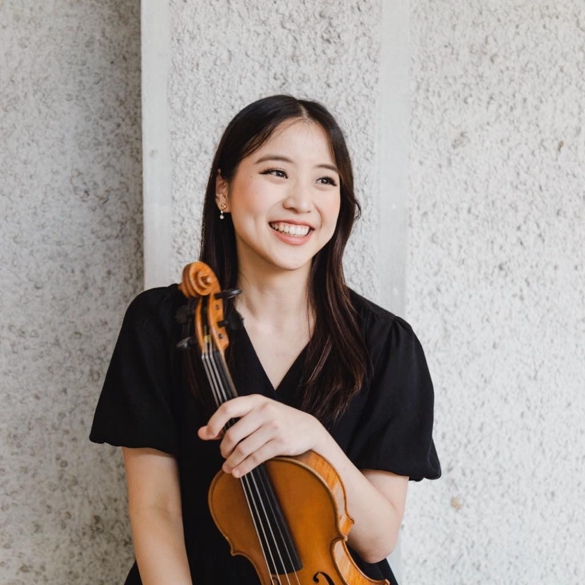
'Mount Ommaney violinist Fiona Qiu is a master of music and her own destiny.' Julie Sanderson, Courier Mail
Piano Trios · with Bernice Chua & Jan Łomosik
Concertmaster · Symphony Orchestra
Solo violin & piano
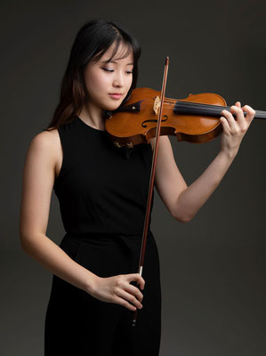
As an orchestral musician, Fiona served as Concertmaster of the Queensland Conservatorium Symphony Orchestra for Strauss' Ein Heldenleben — one of the most demanding concertmaster solos in the repertoire — and twice led the Australian Youth Orchestra's National Music Camp.
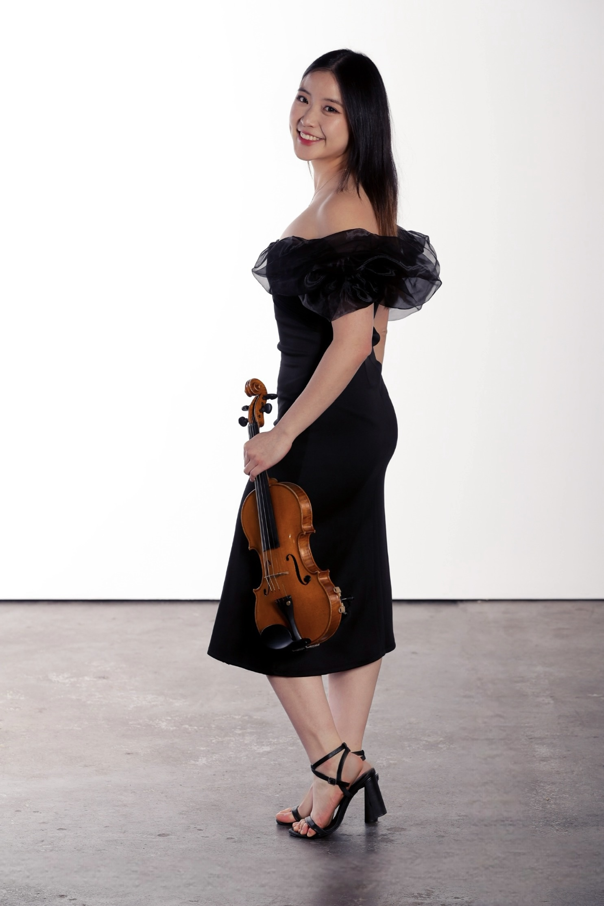
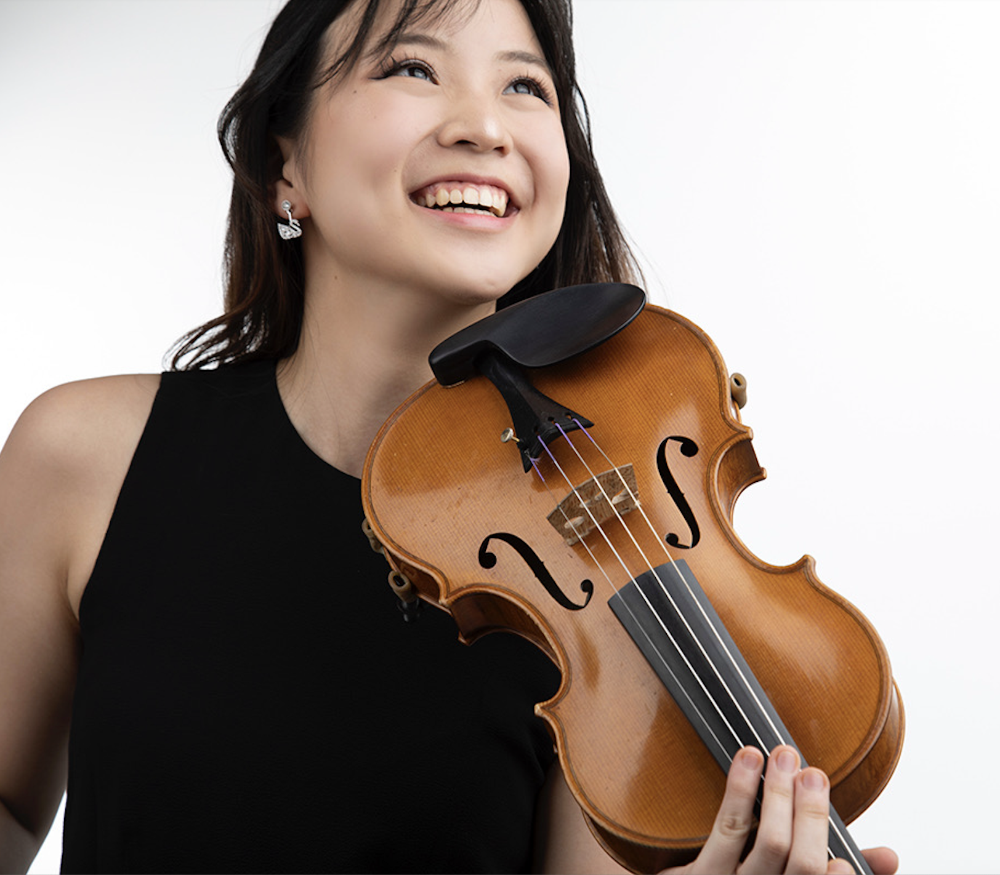
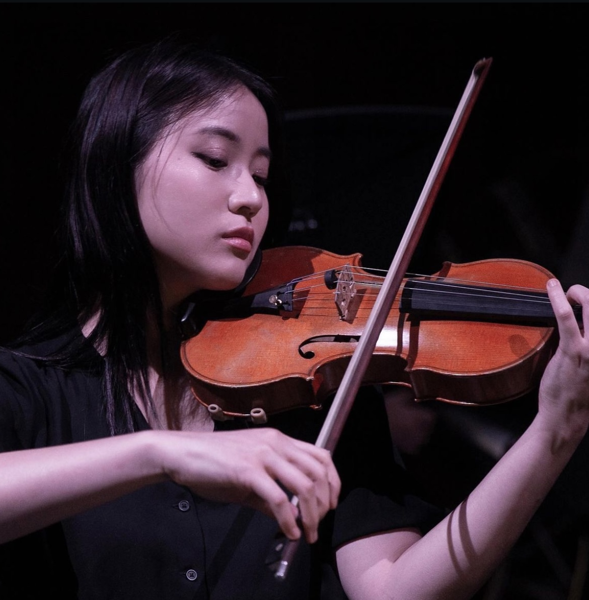
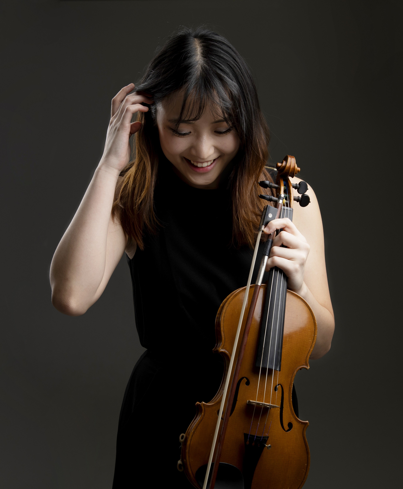
Fiona is a founding member of the Artamidae String Quartet, winner of the 4MBS Chamber Music Prize. She has taken masterclasses with the Emerson, Australian, Borodin, Dover and Goldner Quartets — and with Ray Chen — and performs with Ensemble Q at the Queensland Conservatorium.
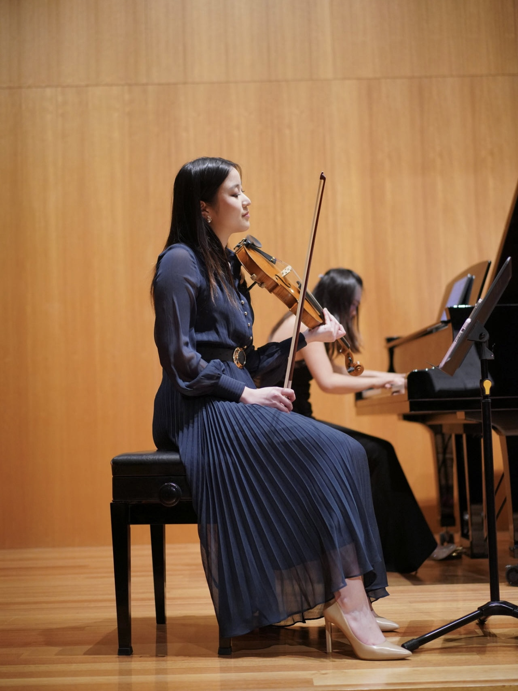
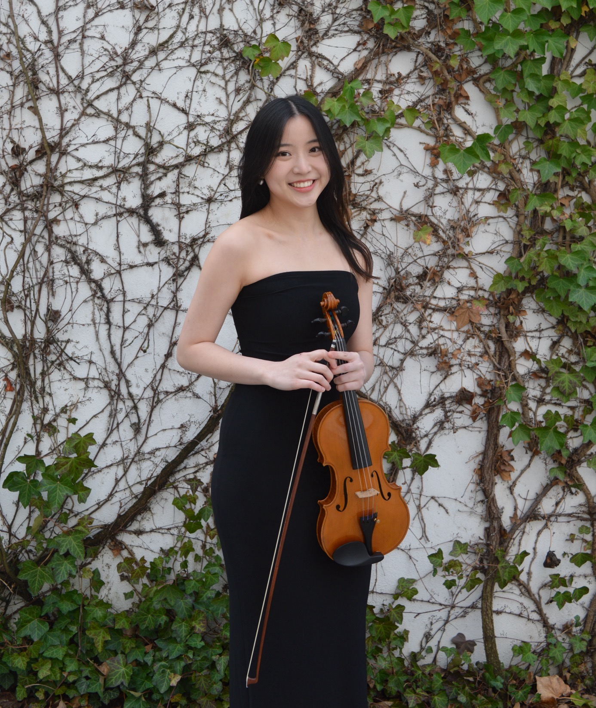
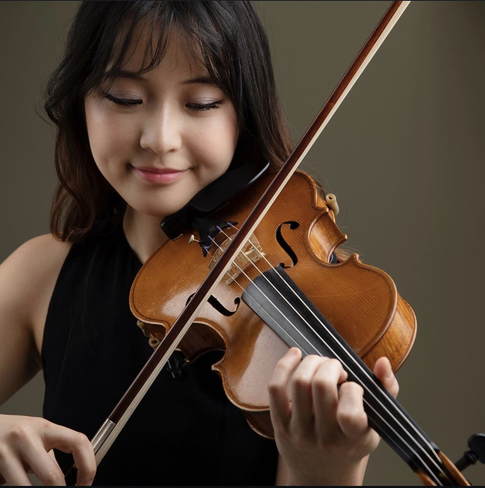
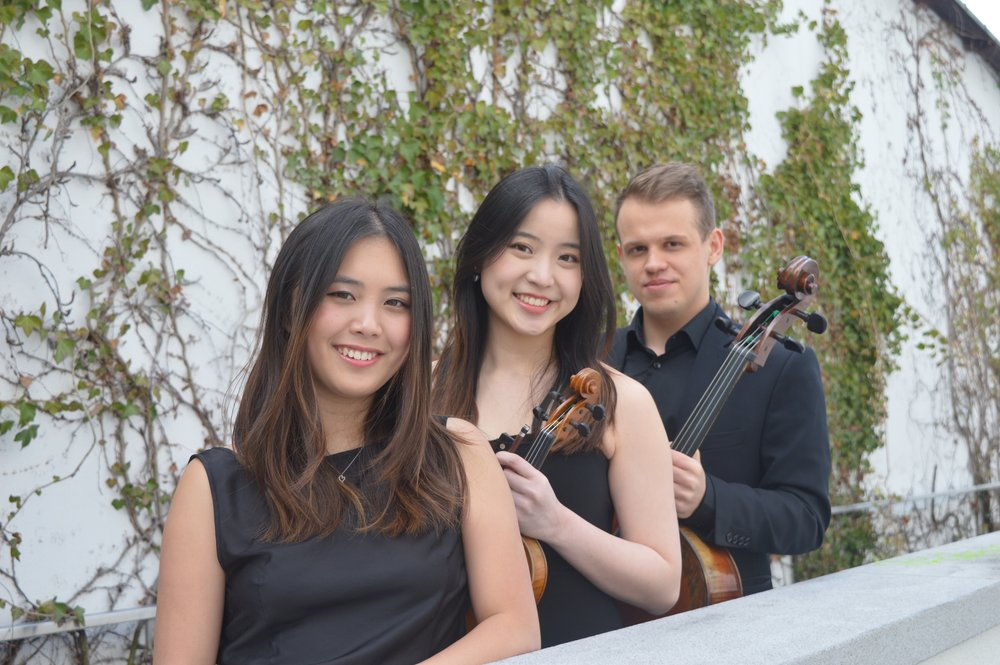
Fiona is a member of the Alpenrose Trio, currently based in Austria — a young chamber ensemble of Australian and Polish musicians formed under the mentorship of their teachers at the Mozarteum University.
The Alpenrose Trio are a young chamber ensemble made up of Australian musicians Bernice Chua on piano and violinist Fiona Qiu with Polish cellist Jan Łomosik…
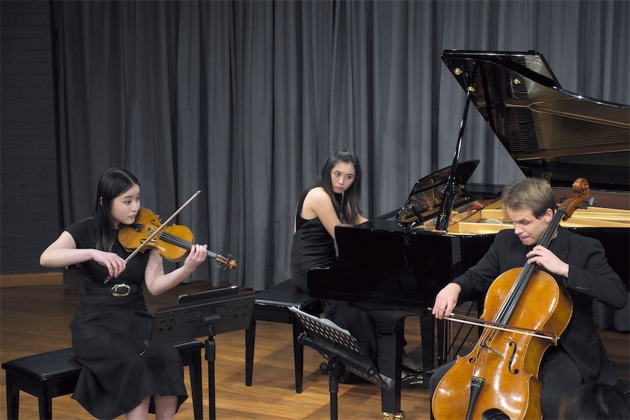
Queensland Conservatorium violin student Fiona Qiu is barely out of her teens, but has already shared a stage with Michael Bublé and led Australia's national youth orchestra…
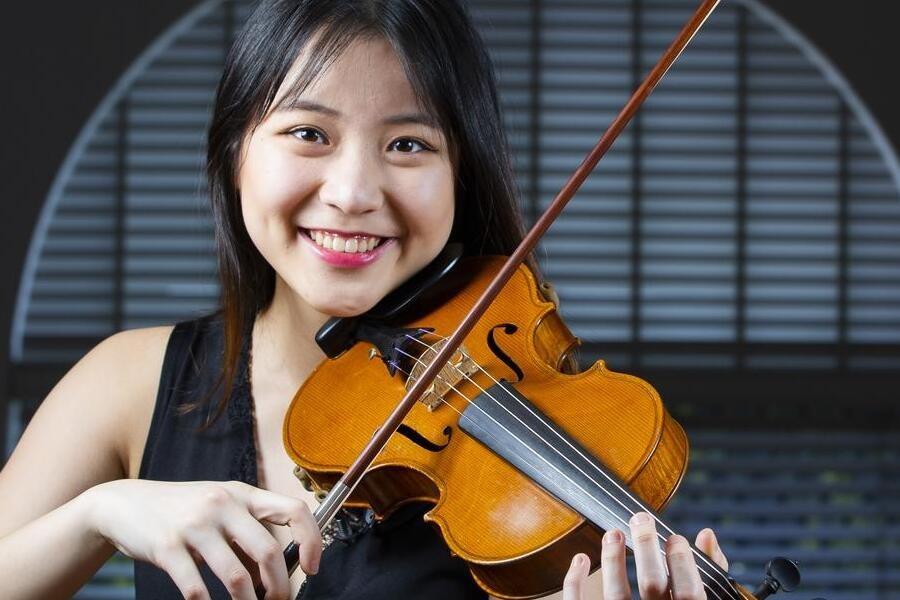
A decision to put music first in her life has paid off for Mt Ommaney music student Fiona Qiu, who has received a prestigious appointment as concertmaster with the AYO…
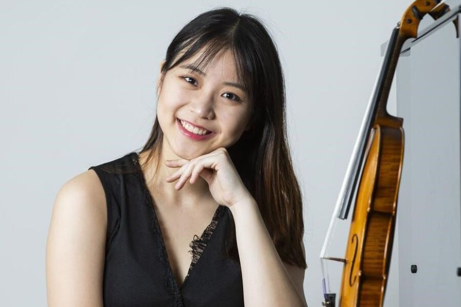